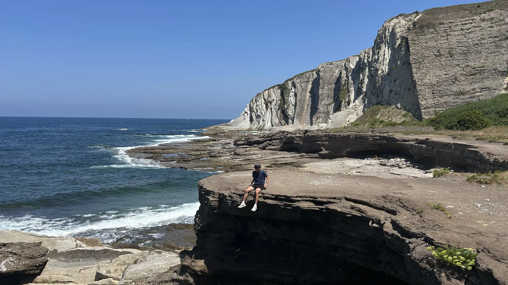
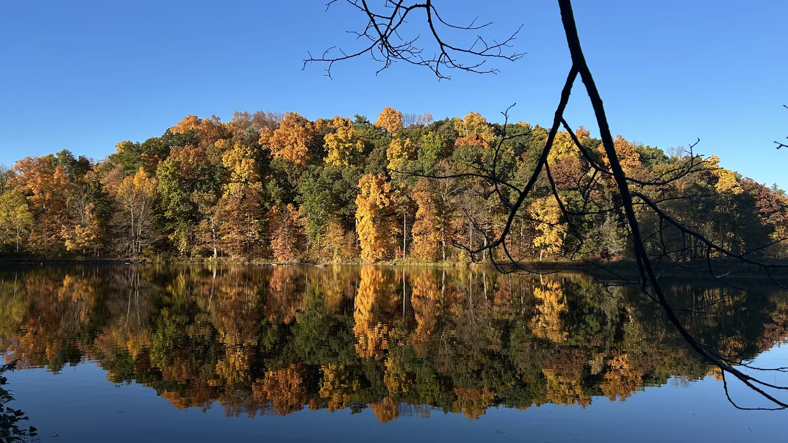
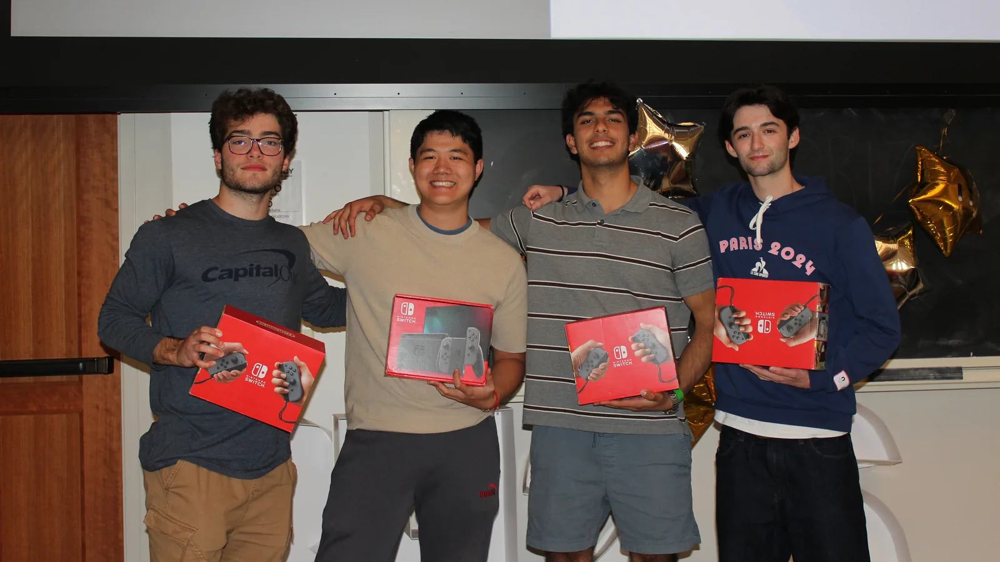
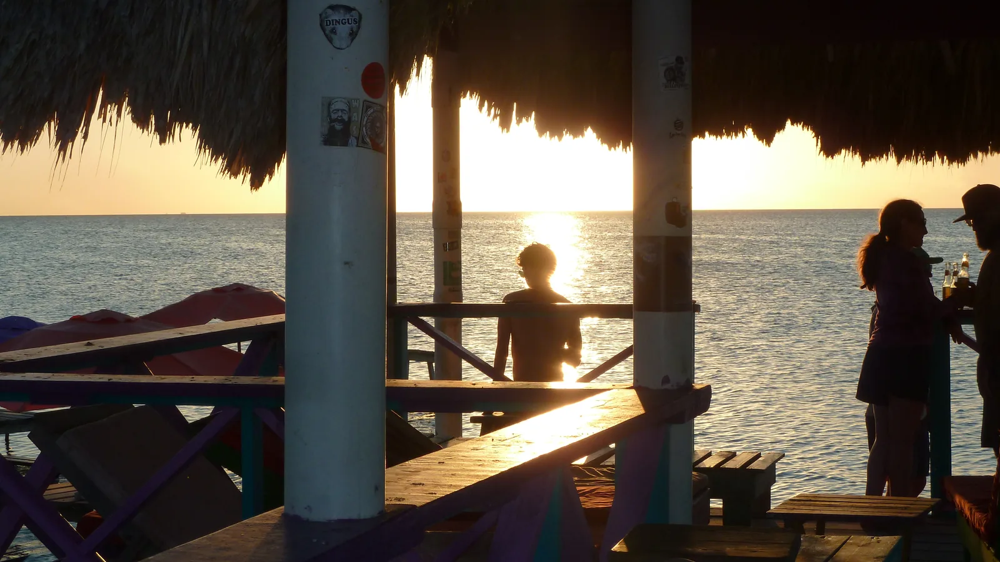

I'm a sophomore studying Operations Research and Information Engineering at Cornell University, currently working on bringing my ideas to life through independent projects and startup collaboration (namely marko).
I'm from Los Angeles and love playing the piano, the guitar, traveling, exploring outdoors, and all things entrepreneurship, AI, and data science.
Reach out to me if you have fun ideas, would like to collaborate on a project, or want to go rock climbing. You can find me on LinkedIn, GitHub, or email me.



